| |
Six Flags Magic Mtn Summer 2016
All right. Time for another update. And it's time for our big SFMM Update of all the visits I took to the park over the summer. I didn't go nearly as often as I did in the past, but I still did take a couple visits to the park, and I've got an update to show for it. OK, I see that Six Flags Magic Mtn is going to be even more RCT-like with that RCT Popcorn Stand. =)
 Oh look. The AAA Private Party is tonight. Not a big deal since I'm not going to be here all day.
Oh look. The AAA Private Party is tonight. Not a big deal since I'm not going to be here all day.
Hey. You don't have any privacy outside the park. What makes you think you'll have privacy inside the park?
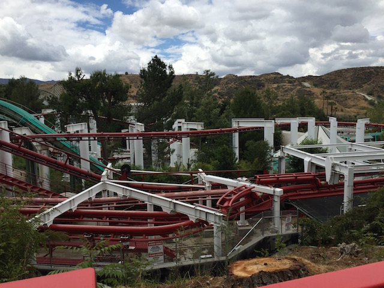
Still bummed about all the trees they had to tear down around Ninja. But hey. It's still a good ride.
WHAT!? THE STRAW NAZI IS THE ASSHOLE TRAINING ALL THE NEW HIRES!!? I am so sorry SFMM New Hires. I am so f*cking sorry.
"OH GOD!!! I hadn't ridden Green Lantern since it first opened. I thought you were just exxagerating when you said it went to hell. But MY GOD!!! THAT WAS AWFUL!!!!"
 Hey. Well at least Batman the Ride still kicks ass and that'll never change.
Hey. Well at least Batman the Ride still kicks ass and that'll never change.
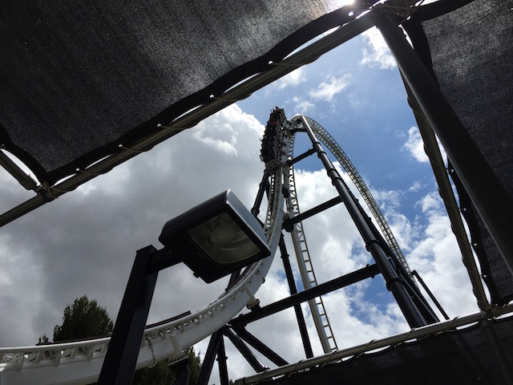
And hey. Full Throttle has a short line. Might as well do that now while it has a short line and is actually worth it.
In a really rare circumstance, we actually ate inside the park today, eating at Johnny Rockets.
"Hmm. You know, the food here is actually...SQUIRREL!!!"
 Slow Riddlers + Short Line = Happy Kevin. =)
Slow Riddlers + Short Line = Happy Kevin. =)
Yeah. Those Super Loops are amazing. Keep promoting the sh*t out of them Six Flags (I'm still dumbfounded that they're not adding any Super Loops for 2017). =)
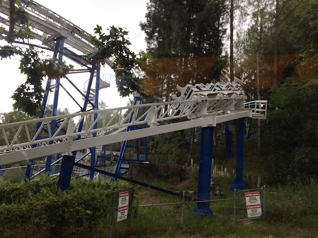
Finally did Revolution without the Virtual Reality. And it's still really good. I know I won't be doing Virtual Reality very often thanks to the VR being a complete capacity nightmare, but at least it's still awesome anyways.
HOLY SH*T!!! IT'S RAINING!!! IN CALIFORNIA!!! Please keep it up. We need as much water thanks to that stupid drought (that's not only ruining agriculture and important stuff, but cliff jumping as well. Oh, and we did go, just not doing an Incrediblecoasters Update on it this year).
And hey. Lex Luthor in the rain is freaking awesome. You're pretty much falling at the same speed as the rain, so aside from getting wet climbing up, you don't have to worry going down.
Never impressed with only one train. But at least with the rain, it's not crowded today.
All right. Visit #2. And it is CROWDED!!! Yeah, that line for the metal detectors was hell to get through.
Yeah. When Batman has a line like that, you know that it's a crowded day (Surprisingly, that line wasn't nearly as bad as I thought it would be).
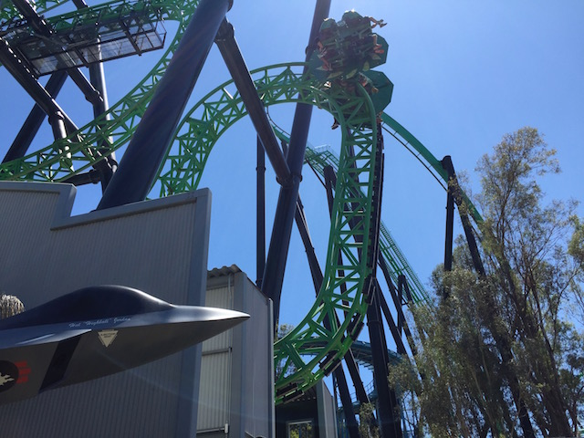
OK. Green Latern was running horribly today. Even by Green Lantern standards, this was terrible. But hey. Andrew liked it.
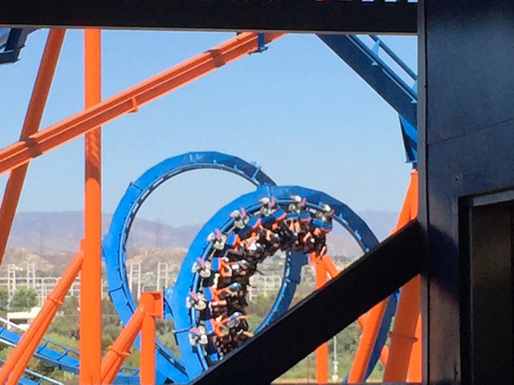
And no matter how crowded the park gets, Scream never gets a line. So that's always good news.
Blah. Andrews only happy because the RMC curse was finally lifted. I still know how he feels about Six Flags. =P
OK. I may really hate Six Flags doing all of those wraps, but that's the best one they've done yet. Shark Week! On a ride named after a snake. =)
Good thing that Six Flags has this single riders line for Non-VR because the VR is clogging up the line and you have to wait a longass time for it with VR.
And of course, they get rid of this Single Riders Line after this visit, forcing you to wait in the horrible slow line. Good job Six Flags Magic Mountain.
Yes. These really are the greatest coasters ever. Nothing comes close to these rides. ;)
OK. There was something wrong with the water this day at SFMM. And oddly enough, only on this day. I've drank the water at SFMM many times. Hell, after this visit, it was fine. But on this day, it tasted like plastic, and had this...vile...almost toxic taste to it. =(
 All right. We have to get on X2. We can't come here and not ride it. Especially when here with people from Florida.
All right. We have to get on X2. We can't come here and not ride it. Especially when here with people from Florida.
 Of course, Andrew, the Arrow Lover, loved it. Though it doesn't help that it's one of the best steel coasters ever.
Of course, Andrew, the Arrow Lover, loved it. Though it doesn't help that it's one of the best steel coasters ever.
Well Andrew needed all the credits, so we stopped and rode Canyon Blaster. And hey, it was fun to ride it again since I hadn't ridden it since 2011. Fun little kiddy coaster.
 I will ride Canyon Blaster again since it's fun to ride once in a while. But not Speedy Gonzalas. That's a one and done. I got that credit, and it's a sh*tty kiddy coaster. Nothing fun about it at all. I'll have a better time snapping photos off the ride. ;)
I will ride Canyon Blaster again since it's fun to ride once in a while. But not Speedy Gonzalas. That's a one and done. I got that credit, and it's a sh*tty kiddy coaster. Nothing fun about it at all. I'll have a better time snapping photos off the ride. ;)
CREDIT WHORE!!!
Sorry about having to endure all those laps. That's just the price one pays as a credit whore. ;)
"Gee. What happened to all my friends doc?"
Wait a minute! There's still one more kiddy coaster for Andrew to ride at SFMM!
Hey. You can't go wrong with a Vekoma Roller Skater. =)
Tweety Cages over the Stratosphere Tower anyone?
 "What!? The park is supposed to close at 9:00!! Not 8:00!! Your website lied to me!! Let me on Tatsu!! F*ck it!! I'm gonna go home, marathon Manta, and cry!"
"What!? The park is supposed to close at 9:00!! Not 8:00!! Your website lied to me!! Let me on Tatsu!! F*ck it!! I'm gonna go home, marathon Manta, and cry!"
What!? There's a Six Flags Park up in Vallejo!! And look at all the cool stuff they're advertising in Vallejo! I know that Vallejo is just the coolest city ever! Screw Vancouver, New York City, Copenhagen, Rome, and Barcelona! Those places suck compared to Vallejo! Look out Alex! I'm coming back up so we can go explore Vallejo! =)
And of course, when hanging out with people from out of state, you gotta take them to In'N'Out. ;)
All right. Visit #3. This is primarily our Hurricane Harbor visit for the year. But oh no! It appears the park is closed! Looks like the Six Flags Website lied again!
Nope. The park is open. They just didn't bother to update the sign for Hurricane Harbor. Good job Six Flags. =)
What!? There's a private party and I'm not invited!? A pox on you!
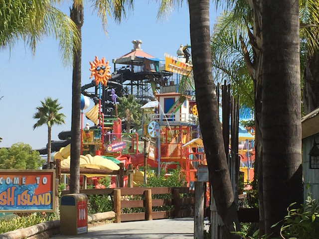
You know those play structures are a ton of fun. I gotta go back and do Splash Island again one of these days.
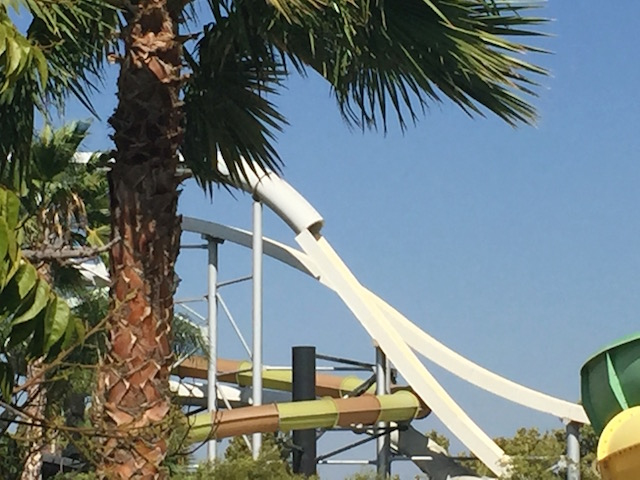
Yeah, I know I did a clone of these slides at Knotts Soak City this summer. But screw it. I like the Taboo Tower slides.
We need more weight on this ride. Evan and I got another group to ride with us. But even with that Dad and his son joining us, we still crawled down.
But we didn't just go to Hurricane Harbor since we've been neglecting to go in the past couple years (though that certainly helps). No, what really drew me back was that SFHH actually ended up getting a new slide complex this year. Python Plunge.
The downside to this is that they got rid of Gator Gorge for this. LAME!!!! Well, at least there's still a clone of that at Raging Waters.
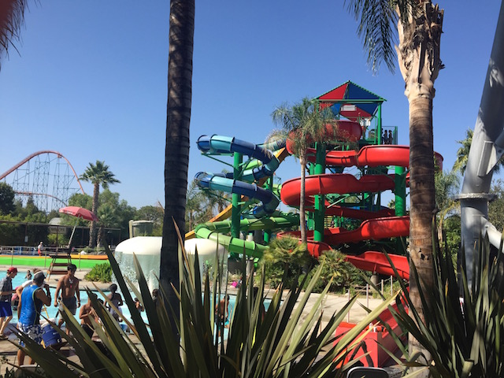
But look on the bright side. It's not as good as Gator Gorge, but it's still a lot of fun. And hey. The twisty slide here is better than Gecko Gully. I will give it that.
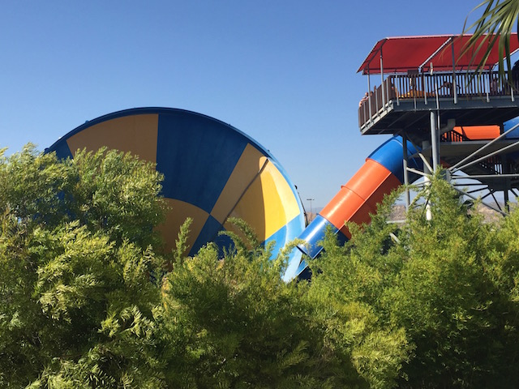
I'm not sure why, but this was without a doubt the best ride I've had on Tornado. It really went up high for us, and it was just two skinny dudes in the raft. =)
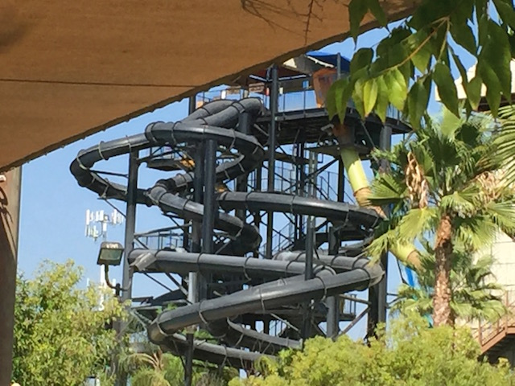
OK. This sucked. We got in line to do the Bonzai Pipelines. Particuarly the Blue one, since that's the good one. But that one is closed. So we shrug and say "Fine. I can settle with Orange Waterboarding Pipeline". But nope. That breaks down too. After 10 minutes, I throw up my arms, and have had it with waiting. So f*ck it! I wound up doing Twisted Fang & Coiled Cobra, which you may recall me saying a long time ago, that I hated these slides and are terrible. But...I can't stand waiting up here. I'm hungry. Maybe they'll have improved over the past 9 years and they aren't as bad as I remembered. Nope. It's as bad as I remembered. =(
You know, I've always enjoyed seeing those Adam Ruins Everything episodes on Youtube (I particuarlly recommend this one since I've been screaming about this WAY before I saw this particular episode, though there's plenty of other ones that cover subjects I bitch about). I just might take up the offer on this coupon.
This place has really good burgers, and apparently good tacos as well. Great little place in Valencia that's become a staple for me.
But I need to withdraw money from my bank account! =(
And yeah. Six Flags Magic Mountain is getting a Justice League for 2017. First off, I just want to say, I CALLED IT!!! Second off, I know that I've been saying for years that Six Flags has needed some sort of dark ride to balance out the park. And they're finally getting one. This is great news. And yet, the clone thing just rubs me the wrong way. I know it's great for the park and I've been calling for this for a while. But all I could do while hearing the Six Flags announcements was sing "I Think I'm a Clone Now" by Weird Al in my head. But hey. If any park needs Justice League, it's Six Flags Magic Mountain. We certainly need it more than Six Flags Great Adventure and ESPECIALLY more than Six Flags Over Georgia (You guys already have Monster Mansion, which is awesome BTW. You're set).
God damn. If that's the line to get into the park at like 4:30, then it's pretty bad inside.
 But hey. At least X2 always has the sweet spot. And since it's one of my favorite rides, that's fine with me. =)
But hey. At least X2 always has the sweet spot. And since it's one of my favorite rides, that's fine with me. =)
OK. This depresses me. And I'm not blaming the employees for this. I've worked X2. You can't go in there at all. And even if they allowed you to go there to clean, you couldn't get up there to clean the gum. Working X2 is miserable, and you just might have to deal with braindead f*ckwads trying to win a Darwin Award, but at least they don't force you to do that when the park closes. So yeah. People, you suck. F*ck society. People keep proving to me that they are awful.
OK. This cover band may suck, and may not even be covering good songs. But let's look at the good news. They're an improvement over that sh*tty Acapella Group. YAY!!!
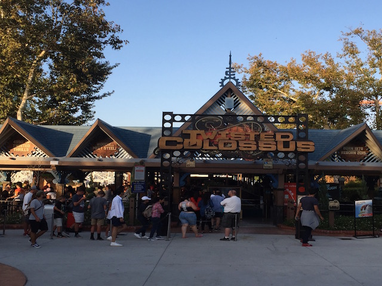
And hey. What better way to end the day than with a ride on Twisted Collosus.
Hey people! GO!!! You're holding up the line jackasses!!
 I have to give a shout out to the Twisted Collosus crew for hauling ass and actually managing to get the trains to race a decent amount of the time. I think today may have been the time I had the best race on the ride. Twisted Collosus is awesome and thumbs up to their crew.
I have to give a shout out to the Twisted Collosus crew for hauling ass and actually managing to get the trains to race a decent amount of the time. I think today may have been the time I had the best race on the ride. Twisted Collosus is awesome and thumbs up to their crew.
Home
|